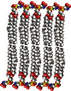

The Biology Project > Cell Biology > Cell Membranes > Problem Set
Cell Membranes Problem Set
Problem 3: Hydrophobic forces
Tutorial to help answer the question
Placing phospholipids into an aqueous solution immediately results in their forming a lipid bilayer. What is the driving force causing this ordered arrangement?
A. The phospholipids are very ordered in water, and gain freedom of movement by forming a bilayer. B. Water, when associated with lipids, is forced into an ordered arrangement with fewer hydrogen bonds. Forcing lipids into a bilayer gains freedom of movement for the water. C. Phospholipids have a strong affinity for other phospholipids, leading to self assembly. Tutorial
Phospholipids
Phospholipids are amphipathic molecules with two hydrophobic fatty acids and a hydrophilic phosphate-containing group linked to glycerol. When placed in an aqueous solution, water forms a shell around the hydrophobic lipid, a situation that not only prevents water from making hydrogen bonds with other water molecules, but also reduces freedom of movement, making the water molecules more ordered.
Scientists define "entropy" as a measure of disorder. Forcing water to be ordered decreases entropy, a very unfavorable situation. Water gains entropy when the fatty acids are hidden in the bilayer. The ability of water to force hydrophobic molecules away is best illustrated by a mixture of oil and water in salad dressings. The hydrophobic effect forces the lipids away from the water, making a separate layer. Vigorous shaking can mix the two phases when we want a mixture of oil and water for our salad.
Phospholipid bilayer
 Once the bilayer forms, further stabilization comes from other weak forces. Van der Waals forces can result from the packing of fatty acid tails inside the bilayer. Hydrogen bonding and electrostatic attractions (ionic bonds) occur between the hydrophilic groups of phospholipids and the aqueous solution.
We say that hydrophobic forces cause the bilayer to form, and the other weak forces stabilize the bilayer. This example of one weak force initiating a structural rearrangement that is then stabilized by other weak forces is repeated many times in biology.


The Biology Project > Cell Biology > Cell Membranes > Problem Set
Department of Biochemistry and Molecular Biophysics
University of Arizona
May 2002
Revised: August 2004
Contact the Development Team
http://biology.arizona.edu
All contents copyright © 2002-04. All rights reserved.